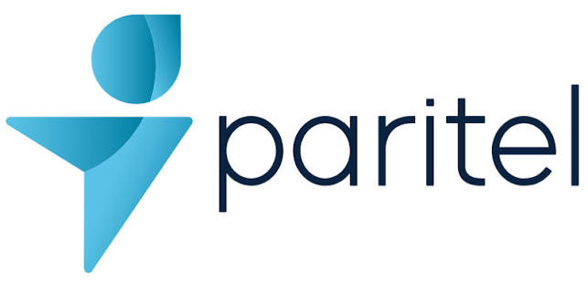
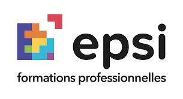
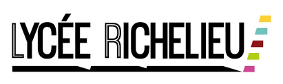
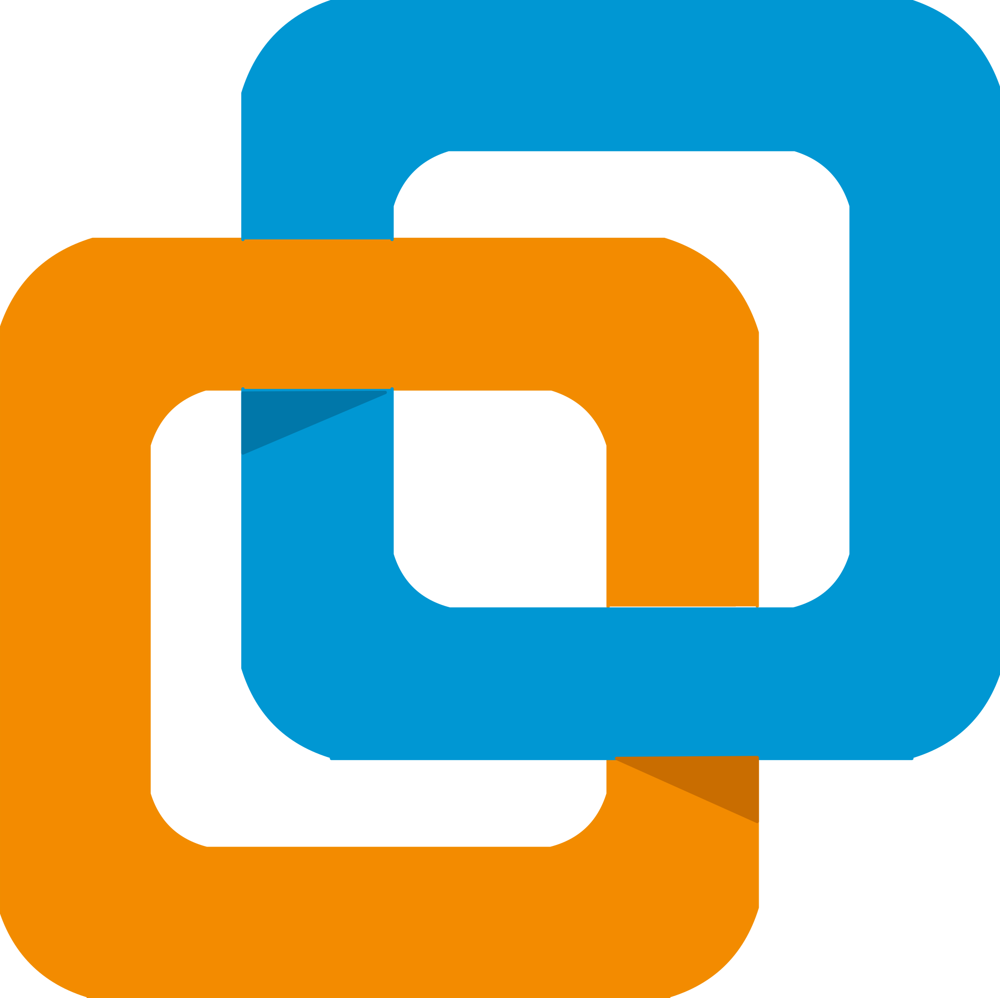

root@paulyann:~# ./whoami_
Curieux, Rigoureux et Passionné
En BTS SIO option SISR, je me forme à l'administration des systèmes, des réseaux et à la sécurité, en alternance chez Paritel.
USER_CONFIG.JSON
- LOCATIONRueil-Malmaison (92)
- DRIVER_LICPermis B & A
- LANG_ENNiveau B1 (Technique)
- HOBBIESJeux Vidéo, Hardware, Rap
Systèmes & Virtualisation
Réseaux
Dév & Outils
Mon Parcours

Paritel (Alternance)
Août 2026 - Sept. 2027 | Bois-Colombes
Apprenti Support Technique Client : diagnostic et résolution des incidents clients.
Global Knowledge (Stage)
Juil. 2026 - Août 2026
Assistant informatique : assistance technique.
Paris Ynov Campus (Formation)
2025 - 2027
BTS SIO option SISR
Global Knowledge (Stage)
Mai - Juin 2023 | Rueil-Malmaison
Assistant informatique : réseau Cisco, virtualisation VMware, Windows Server Core, MySQL.

EPSI Paris (Formation)
Sept. 2022 - Mars 2024
Socle Numérique 1 & 2 : web, systèmes, réseaux et bases de données.

Lycée Richelieu (Bac)
Sept. 2018 - Juill. 2022
BAC STI2D SIN
Outils & Environnements

VMwareCisco
 Windows
Windows Linux
Linux HTML5 / CSS3
HTML5 / CSS3 Git
Git MySQL
MySQL VS Code
VS Code